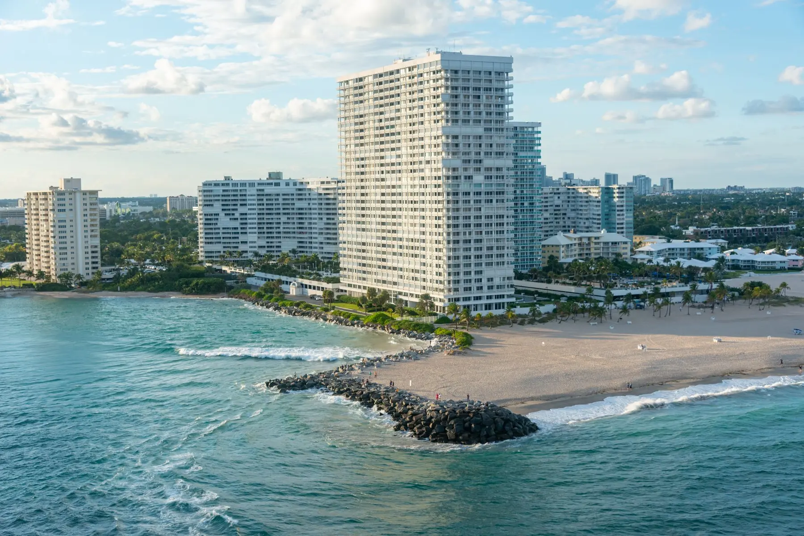

Boca Raton up to Jupiter, the barrier islands out to Wellington. Wherever your pool is, it gets the same weekly service and the same report with readings and photos.
Each city has its own page covering what we actually see there, because a screened pool under oaks in west Boca, a well-water pool in Jupiter Farms and an oceanfront pool in Highland Beach are three genuinely different jobs.
Pools near each other are serviced together. A tight route is what keeps the drive time out of your rate, and it is why we quote by address rather than off a price list.
It also means the honest answer about scheduling depends on where you are. When you call, we'll tell you which day we run near you and when we could start, rather than promising tomorrow and sorting it out afterwards.
Palm Beach County has more towns than we have pages. Send the address through and we'll tell you which day we run near you and when we could start, at no cost and with no follow-up if it isn't for you.
If we can't take your pool, we'll point you at someone local who can. It costs us nothing and it is what we would want.